|
|
HELP FIND THE FOLLOWING SPANISH LOCATIONS
PAGE 82
THE
PROTECTORS: The Quick Brown Fox (Don Chaffey: Summer
1971)
Jardi Botanic de Cap Roig, Palafrugell, Spain: Spanish villa being used by The Contessa (this is now the ticket office and entrance to the gardens).
(Identified by Sietse Postma, February 2025)

Carrer del Sant Pere, Begur, Spain: Chino (Anthony Chinn) lurks outside the offices of Osina’s Typewriter business waiting for Harry.
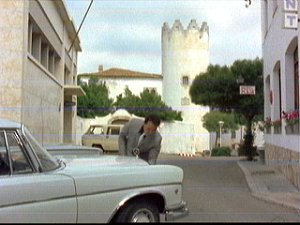
Begur, Spain: Keller’s men, in a van, follow The Contessa and Harry as they leave Osina’s.
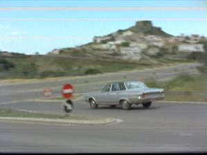
Ermita de Sant Ramon, Begur, Spain: Keller’s men, in a van, follow The Contessa and Harry as they leave Osina’s.
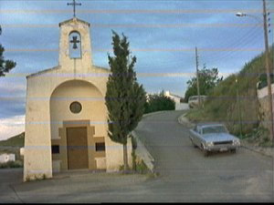
Films:
SUDDENLY LAST SUMMER
(1959)
SEA FURY
(1958)
Unknown 3: Keller’s men, in a van, follow The Contessa and Harry as they leave Osina’s.
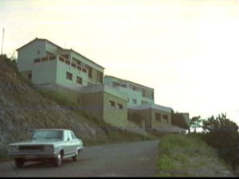
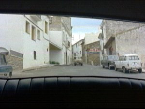
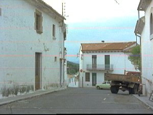
Post Office, Palafrugell,
Spain: The Contessa visits the local post office (redeveloped) to
arrange for a letter to
be sent with the previous day’s date.
Identified by Nik Duserm, June 2020
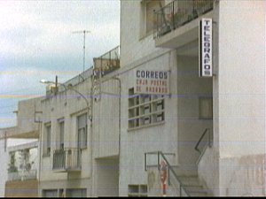
3, Route de Florissant, Geneva, Switzerland - The bank in
Geneva where Keller’s agent is to pick up some more funds.
Identified by Paul Stroud, September 2014

Plaça Església, Begur, Spain: Chino intercepts Keller’s mail.
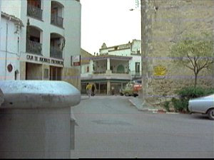
Unknown 6: Chino intercepts Keller’s mail.
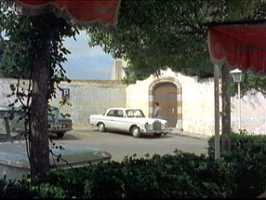
 Probably
Begur, Spain
Probably
Begur, Spain
Unknown 7: Paul (Tony Anholt) follows The Contessa (Nyree Dawn Porter) to Keller’s villa by motorcycle.
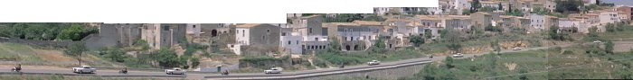
Unknown 8:
 Probably
Begur, Spain
Probably
Begur, Spain
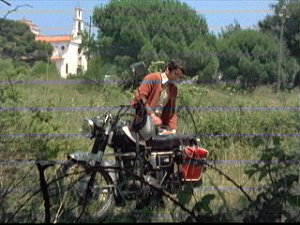
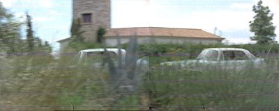
Villa on the Carrer de la Verge de Montserra, S'Agaró, Spain - Hans Keller (Morris Perry) greets The Contessa (Nyree Dawn Porter) as she enters the recreation area of his villa by the sea (can be seen from Cami de Ronda footpath).
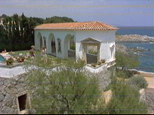
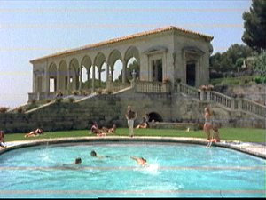
THE
PROTECTORS: The Numbers Game (Don Chaffey: Summer
1971)
Begur, Spain: Susan Crediton (Margareta
Lee) waits for one of her regular telephone calls.
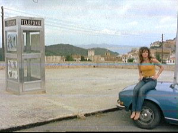
Castell del Voevodsky/Jardí Botànic Cap Roig, Cap Roig, Palafrugell: Harry (Robert Vaughn) follows the car that picks the bar owner up and arrives at a villa.
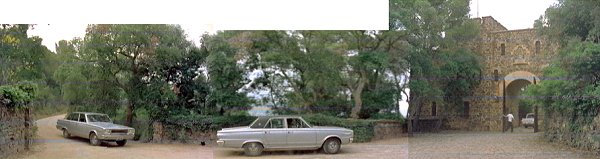
Carrer de Bonaventura Carreras/Plaça Església, Begur, Spain: Harry (Robert Vaughn) follows Pepe back to his bar after he has planted drugs on his car. From then on he and The Contessa (Nyree Dawn Porter) haunt the bar.
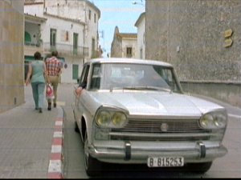
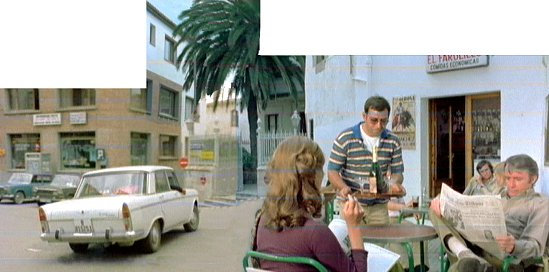
The Vintage Hotel, Cap sa Sal, Begur, Spain - Harry (Robert Vaughn) watches Susan Crediton (Margareta Lee) from the hotel with binoculars. He is joined by The Contessa (Nyree Dawn Porter). After leaving for her rendezvous she is brought back to Harry and the Contessa by Carter (Sherwood Price).

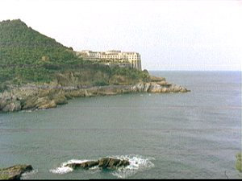
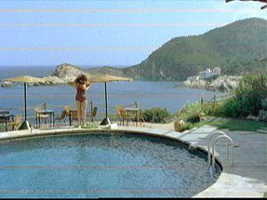
Films:
SOME GIRLS DO
(1969)
THE PROTECTORS:
Brother Hood
(Don Chaffey: Summer 1971)
Castell del Voevodsky/Jardí
Botànic Cap Roig, Cap Roig, Palafrugell: Harry is driven up to the
gates of Bela Karoleon’s villa.
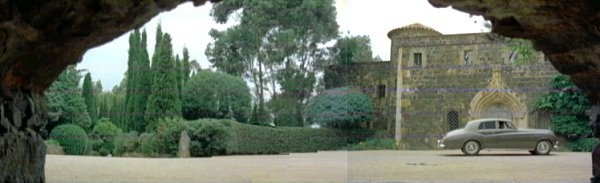
Figueres, Catalonia, Spain - Harry (Robert Vaughn) and The Contessa (Nyree Dawn Porter) take Sandor Karoleon to a bullfighting arena (La Plaza de toros de Figueras, Carrere del Far) to hand him over to Heller (John Cazabon).
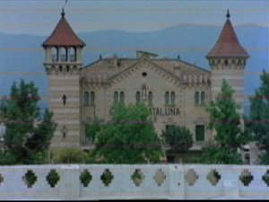

THE
PROTECTORS: Disappearing Trick (Jeremy Summers: Summer 1971)
Unknown 1: After managing to evade Harry, The Contessa and Brad Huron
leave Paris for where?
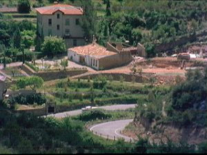
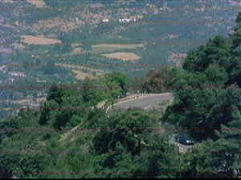
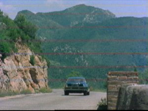
Parque Natural de la Montaña de
Montserrat, Catalonia, Spain
(Identified by Siese Postma, August 2023)
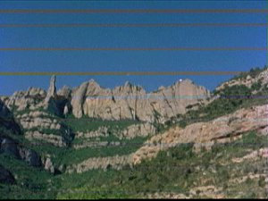
Think you know a spot? Need a bigger image? Email me.
< Previous | Index | Avengerland | Next >
Copyright © 2023 Anthony R. McKay